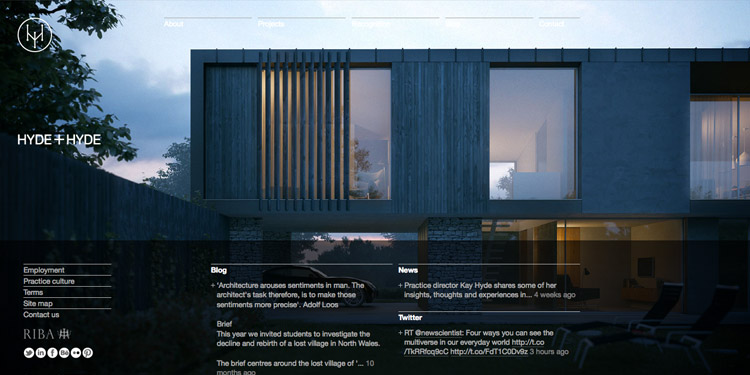
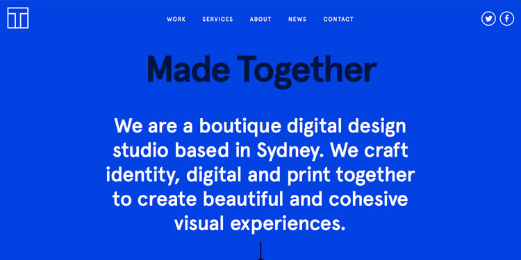

Úvod
Bootstrap je jednoduchý a volně stažitelný framework pro tvorbu webu a webových aplikací. Obsahuje návrhářské šablony založené na HTML a CSS, sloužící pro úpravu typografie, formulářů, tlačítek, navigace a dalších komponent rozhraní, stejně jako další volitelná rozšíření JavaScriptu. Pro použití Bootstrapu jsou nutné základní znalosti HTML a CSS, interaktivní prvky jako jsou tlačítka, boxy, menu a další kompletně nastavené a graficky zpracované elementy je totiž možné vložit pouze pomocí HTML a CSS.
Historie
Zaměstnance Twitteru trápila nekonzistence různých aplikací ve firmě, jejich vzhled byl odlišný a byla nutná znalost konkrétního stylu k jejich úpravě. Proto začali pracovat na univerzálním CSS frameworku, který firma nakonec uvolnila jako open-source. To znamená, že jej můžete volně používat i ke komerčním účelům a nemusíte to ani nikde uvádět. Bootstrap určitě není něco, za co byste se měli stydět, naopak se stal značkou, která zaručuje moderní a dobře fungující kabát pro web, kde je použitý. To nejlepší je ale obrovské množství volně dostupných šablon, které jsou nápadité, vzhledově velmi rozmanité a po menší úpravě poslouží jako fungující základ pro vaši práci. Začít používat CSS framework je pro vývojáře podobný posun jako třeba začít používat CSS a nepsat styly přímo do HTML, jako se to dělalo v roce 1995. Framework si samozřejmě můžete vytvořit i svůj vlastní, nicméně v tomto kurzu se budeme věnovat právě již existujícímu Bootstrapu. Budete pracovat rychleji a levněji. Co více si přát?
Výhody
- Responzivita - Bootstrap styly jsou dokonale přizpůsobené pro mobilní zařízení. Je tedy 100% responzivní. A právě mobilní telefony jsou v dnešní době na webu již častější zařízení, než klasické počítače. Určitě nechcete, abyste přišli o zákazníky jen proto, že někdo otevřel vaše stránky na mobilním telefonu a písmo je tak malé, že jej nemůže přečíst.
- Mobile-first - Framework byl ve verzi 3 kompletně přepsán, aby podporoval mobile-first přístup. Jeho kód je tak kompaktnější a podporuje dobré praktiky.
- Flat design - Co dnes není flat? Váš web bude vypadat svěží a in. A když se trend změní, můžete si být jistí, že Bootstrap na to zareaguje. A pokud se vám flat přeci jen nelíbí, můžete si stáhnout jakékoli jiné ze schémat, která jsou pro Bootstrap dostupná (viz dále).
- Grid - Obsahuje dvanáctisloupcový grid systém. Pokud již znáte výhody grid systému, víte, že ve většině případů úplně nahradí pozicování elementů na stránce, které je potom navíc pravidelné a responzivní. Případně se o gridu dozvíte dále v tomto kurzu.
- Je zdarma - Bootstrap je zadarmo i pro komerční účely.
Stránky používající Bootstrap
-
Hyde + Hyde
-
Made Together

